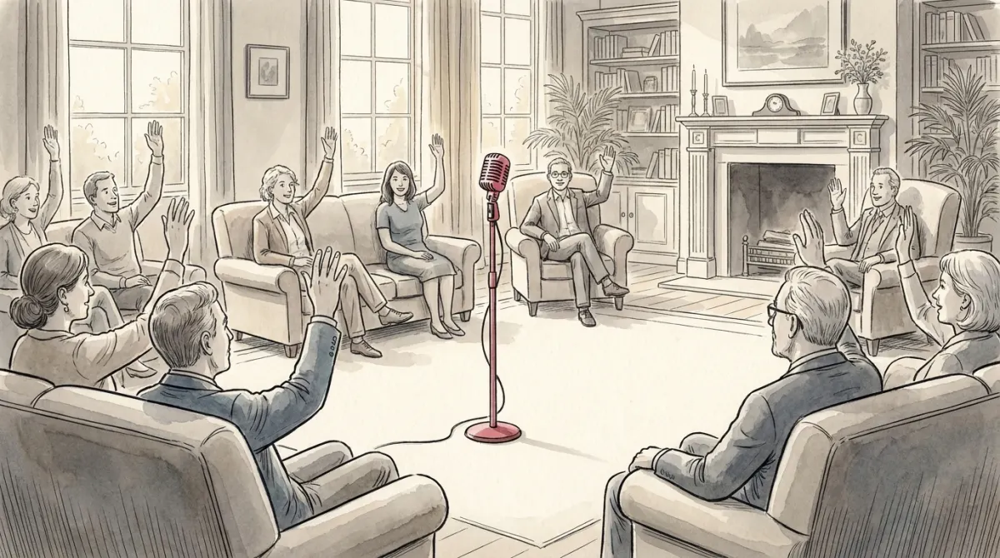

Go back to Via Larga 12, but let the building grow into a club of thousands. In one version of the club, the committee runs everything, forever, and the microphone at the front is theirs alone. In another version, two things are true at once: anyone can walk to the microphone and challenge the committee, and everyone in the room gets a vote when the challenge is put to the floor. That second club is a democracy, and the two conditions you just read are, quietly, the two dimensions the whole scholarly literature turns on. Hold them.
The course frames democracy as three things at once: an ideal (rule by the people: equality, freedom, justice, mutual respect), a set of real institutions that approximate the ideal, always imperfectly, and a story of expansion: from about 35 democracies in 1974 to 99 by 2018. With a warning attached: the road runs both ways, and the traffic has recently reversed. Autocratization is on the surge, which is Poli-04's business.
Athens, fifth century BC, invented the word and a working prototype: citizens participated directly, with equal political rights and freedom of speech in the assembly. Two enormous asterisks, both exam-friendly. First, "citizens" excluded most of the population (women, slaves, foreigners): direct democracy, tiny circle. Second, the assembly's power over individuals was total: no protection of individual rights existed. Socrates could tell you how that ends. Small wonder "democracy" (démos + krátos) kept a negative connotation, mob rule, well into the nineteenth century.
The modern rebuild, the mass liberal republic (XIX-XX), changed both terms. Decisions are made by citizens indirectly, through elected representatives held accountable at the next election. And the whole machine is wrapped in liberal principles: equal political rights for citizens, social and human rights that even non-citizens hold, and a government bound to respect all of it. Add the long expansion of who counts (property-less men, then women, then younger voters: the franchise story continues in Poli-07), and you get what the course calls Western liberal democracy.
Open answers about democracy start with one of two definitions. Learn both; they are different tools.
"The institutional arrangement for arriving at political decisions in which individuals acquire the power to decide by means of a competitive struggle for the people's vote." Notice how little this asks: no ideals, no virtue, just elites competing for votes. It is deliberately minimal, a definition you can check from the outside: was there a real competitive struggle? Then it qualifies.
Dahl defines democracy by the combination of open contestation for power (the open microphone) and inclusive participation (everyone votes), resting on a minimum set of guarantees: freedom of organization, freedom of expression, the right to vote, eligibility for office, the right of leaders to compete for support, alternative sources of information, free and fair elections, and institutions that make policy depend on voters' preferences.
The course also gives a compact four-item version, minimum conditions for democracy: (1) free and fair elections, (2) universal participation, (3) respect for civil liberties, (4) responsible government. And an expanded definition for the ambitious: add horizontal accountability (institutions checking each other, wait for Poli-05), high citizen participation, and socio-economic equality.
MCQ shows a quote: attribute it (competitive struggle = Schumpeter; contestation + participation = Dahl). Open question "define democracy": open with either, then use the four minimum conditions as your discussable items. That is the recipe from Poli-00 with the blanks filled.
Is a country a democracy, yes or no? The research world splits: dichotomous measures force a yes/no; continuous measures place countries on a dial, which is how the big datasets work (Polity, from 1800; Freedom House, from 1972; V-Dem, from 1789, with separate dials for electoral, liberal, egalitarian, deliberative flavors of democracy). The dial matters because real countries are rarely at the ends. Drag Dahl's two dimensions and watch where the club lands:
The dial's murky middle is where the interesting cases live. Hybrid regimes hold elections but tilt the field (fully treated in Poli-04). And the course flags Zakaria's label illiberal democracy: countries combining free and fair elections with the absence of constitutional liberalism, majorities elected fairly that then trample courts, media, and minorities. The two halves of "liberal democracy" can come apart, and the exam loves asking which half is missing.
Among full democracies, Arend Lijphart draws the course's favorite typology. Two package deals, each internally coherent:
| Majoritarian democracy | Consensus democracy | |
|---|---|---|
| Electoral system | majoritarian, single-member districts | proportional representation |
| Party system | two parties | multi-party |
| Government | single-party cabinets, no coalitions needed | coalition governments |
| Power structure | unitary, centralised; unicameral tendency | federal, decentralised; bicameral (upper house for territories) |
| Constitution | flexible, easy to amend | rigid (supermajorities, referendums), strong judicial review |
| Spirit | winner governs, whole and alone | power shared, minorities built into the deal |
The logic to remember, rather than the rows: majoritarian systems concentrate power in the election's winner (Britain is the archetype); consensus systems disperse it so that governing requires perpetual agreement (Switzerland, Belgium). Neither is "more democratic"; they answer the same question, who should the people's power go to, differently, and the scholarly fight over which performs better (Lijphart vs Sartori and Tsebelis) is still open. Each row of the table becomes clearer over the next lessons: electoral systems in Poli-07, coalitions in Poli-09, federalism and judicial review in Poli-05.
Democratization came in waves: a long slow first wave through the nineteenth century into the 1920s, a second after 1945, and the famous third wave from 1974 (Portugal, Spain, Latin America, then post-1989 Eastern Europe), which took the count from 35 to 99. Each wave was followed by a partial reverse wave, and most scholars read the present as one: democratic backsliding in established democracies, active autocracy promotion by regional powers (China, Russia, Saudi Arabia), and globalization feeding anti-liberal nationalist discourses (Poli-11 will name the vehicle: populism).
The course's closing note is about agency, and it makes a fine closing line for open answers: democratization is not an automatic global path. It depends on political elites' choices, and democracy's survival depends on its capacity to perform, to deliver rights, equality, and engagement to more people. Democracy is not inevitable; it is maintained, or not.
Whose definition is speaking, and which family is showing? The exam reflex:
| Schumpeter | democracy = institutional arrangement where power is won through competitive struggle for the people's vote |
| Dahl | open contestation + inclusive participation, resting on 8 guarantees (organization, expression, vote, eligibility, competition, information, free elections, responsive policy) |
| Minimum conditions | free and fair elections · universal participation · civil liberties · responsible government |
| Athens | direct but narrow (citizens only) and rights-free; "democracy" a slur until the XIX century |
| Liberal republic | representation + accountability + liberal principles wrapped around majority rule |
| Measurement | dichotomous vs continuous; Polity, Freedom House, V-Dem (the dimmer, not the switch) |
| Illiberal democracy | free and fair elections WITHOUT constitutional liberalism (Zakaria) |
| Lijphart | majoritarian (concentrate: SMD, two parties, unitary, flexible constitution) vs consensus (disperse: PR, coalitions, federal, rigid constitution, judicial review) |
| Waves | three waves of democratization, each with a reverse wave; today: backsliding + autocracy promotion |
| Survival | depends on elites and on performance: more rights, equality, engagement |
One club, one open microphone, one full room. Everything else is engineering.
Six questions in the written test's style.